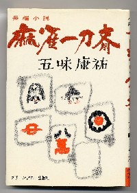

五味康祐といえば、剣豪小説で有名な作家。σ(-_-)もいろんな作品を愛読した。そんなかでも好きだったのが、「二人の武蔵」 宮本村出身の武蔵は二人いたという設定の、大変面白い小説だった。
その五味康介は、麻雀も大変好きだった。近代麻雀がまだ活字月刊誌だったころ、対局なんかにも顔を出していた。そこで当時の編集長が、麻雀小説を書いてくれるように頼みに云ったところ、「ワシは物書きが商売だから、頼まれれば書かんことはない。しかし物書きに商売を頼む以上、それなりの原稿料を考えているんだろうな」と返事した。
ただ とは云わないまでも、麻雀の縁での格安を考えていた編集長は絶句。すると五味氏は続けて、「まぁ余分なことは考えるな。つきあいは麻雀だけにしておけ」と云ったそうな。うへぇ なんだかカッコいい。そんな五味康祐が書いた麻雀小説の一つが、この麻雀一刀斎。

グリーンアロー出版、昭49.8.25 ¥580円
読み切り短編が５編、収録してあるアンソロジー。さすがに物書きが商売だけあって面白い。いや、面白いと云うより味がある。じゃぁどんな味かといっても、文章の味なんかは本物を読むしかない。(^-^； ちょっと頑張れば古本屋で見つかると思うじょ。
|